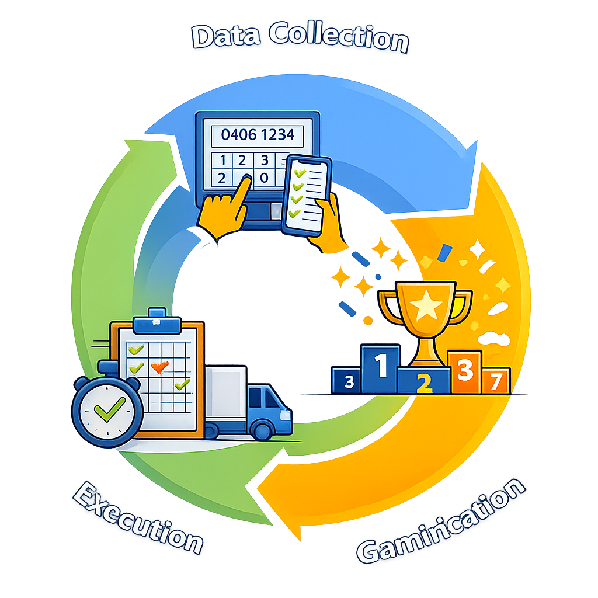

POS Analysis
Visibility into transaction patterns, cashier behavior, and store performance without touching your POS.
That's not a small gap — it's a category that never got built. While POS/PMS systems, payment terminals, and loyalty apps have all been rebuilt from the ground up over the last decade, the screen facing the customer has been left behind. At best, it shows a price. At worst, it shows nothing at all.
The cost of that gap shows up everywhere. CRM programs that can't capture the customer in front of the till. Loyalty lookups that stall because the shopper doesn't know if they're already a member. Payment fallback that doesn't exist when the network drops.
ID24 is an integrated platform of software, hardware, and POS plugins — over 50 modules in total — that plug into the checkout you already run. No change to your POS. No new workflow for your cashiers.
Just a second screen that finally earns its place: interactive, identity-aware, payment-capable, and quietly intelligent.
Most retail CRM programs are limited not by software but by capture. Data gets lost at the one moment it's easiest to collect — the till. We've spent years helping retail chains fix exactly that.
In low-frequency retail, many customers genuinely don't know whether they're already members. A modern customer display lets them do the lookup themselves, and register in the same flow if they aren't. That single change — lookup plus sign-up on one screen — is often the difference between a 15% capture rate and a 60% one.
A well-integrated CRM also unlocks what comes after: real-time offers at the till, targeted campaigns for customers you want to see more often, and the kind of closed-loop measurement that makes retention budgets defensible.
Four capabilities, one connected in-store CRM journey.
Our methodology
Over more than 15 years, we've delivered structured programs for data capture and performance improvement to leading retail chains and hotel brands. Three things made them work, and they still do:

The customer display is the only moment in the store where the shopper is looking straight at a screen, alone, with a few seconds to spare. We use that moment to capture what CRM teams actually need — verified emails, mobile numbers, loyalty sign-ups, consent.
Store networks improve when the people inside them are engaged. Leaderboards, targets, and real-time scoring turn data-capture goals into something the floor actually cares about.
Methodology is worthless without rollout. We project-manage multi-site deployments end to end, which is why our pilots tend to become programs.
Most customers start with one or two modules and add from there. Each works standalone and integrates cleanly with the rest.
Visibility into transaction patterns, cashier behavior, and store performance without touching your POS.
Reads barcodes that scanners give up on. Fewer re-scans, shorter queues.
Our patented technology: cashier and customer can input simultaneously, without conflict.
Scanner functionality without the scanner hardware.
The core engine. Runs on any consumer-grade tablet.
Central control for content, scheduling, and campaigns across every store.
Real emails, not typos. CRM data that actually works.
Leaderboards and scoring that turn capture targets into daily wins.
Self-service flows on the same platform.
AI that flags suspicious cashier behavior in real time.
Loyalty without the paper or the plastic.
Purpose-built customer displays in 10", 13.3", and 15.6".
Our software is designed to sit on top of whatever you already run. No migration, no forklift upgrade, no six-month integration project. Receipts, content management, schedulisong, loyalty registration, gift cards, digital receipts, campaign logic — pick the modules you need, leave the rest. Everything is managed from a single admin panel and updated over the air.
Over 50 modules covering receipts, content management, scheduling, loyalty sign-up, and more.
Built to plug into existing POS systems without modification. Your cashier workflow doesn't change.
Gamification layers drive participation; built-in analytics turn participation into sales insight.
A quick tap. A false return. A receipt reprinted as a refund. Small acts, repeated across shifts, add up fast — and they're almost invisible in raw POS data.
Our Fraud Detection AI analyzes every transaction anonymously — discounts, cashier activity, voids, returns — against both industry-standard patterns and algorithms trained on your own operation.
The result: fewer checkout errors, lower costs, stronger internal control, and greater security for honest staff and customers alike.
Pattern detected across repeated receipt actions
Above expected range for current shift
Clustered deviations from normal store activity
Pilot timeline
3 steps
A cheap, fast, and low-risk pilot process for retail and hospitality teams. Go from remote setup to measurable impact in weeks.
Pilots are how we start almost every customer relationship. The process is deliberately simple:
01
No change to your existing POS. We deploy via software, remotely.
02
Full support from the ID24 team for installation, configuration, and staff training.
03
You see the impact on transactions, stores, and customers before any broader rollout decision.
Recognition
Accepted into the UIC Accelerator 2026–2027 and coached by Joakim Bohman — CEO of McDonald's Sweden and veteran retail and restaurant operator.
Why ID24
A driver’s license, a phone number, an email address — carried all day, every day. That idea is where our name comes from, and it still drives the product. The customer is already identifiable. The question is whether your till is set up to meet them.
Ready when you are
Book a 30-minute walkthrough. Bring your POS setup, your CRM goals, and your hardest checkout problem. We'll show you what the other side of the till can do.